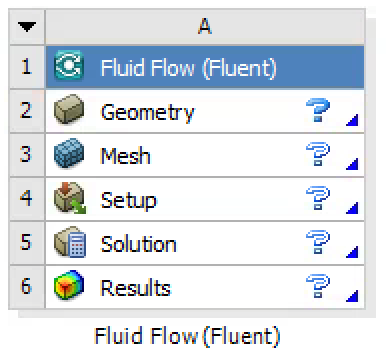
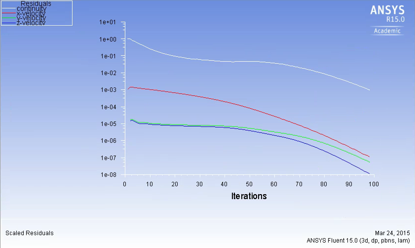
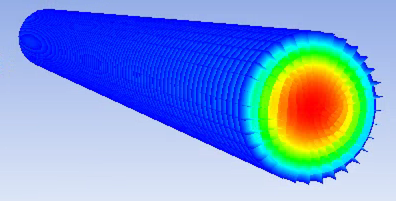
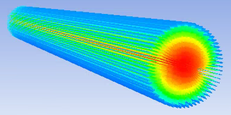

ANSYS® Fluent CFD: A Short Course for Engineers
2. Workflow
April 6, 2015 • Computational Science and Engineering
Contents
Exercise 2.2: 3D Laminar Pipe Flow We will now repeat the solution in 3D, using a cylinder. This should be equivalent to the 2D axisymmetric case if the mesh is adequate.
|
Geometry
|
MeshingDouble-click to open the Meshing interface. After a few moments, the geometry generated in DesignModeler appears in isometric display.
|


PreprocessingMost of the heavy lifting that we need to do is now completed. Open Setup to go into Fluent proper.
|
Processing

|
PostprocessingContour

It is also enlightening to see the small effects of meshing and numerics on a solution. For instance, one can observe some asymmetry in the results by similarly plotting Streamlines

VerificationNow we will compare to the previous (2D) simulation results, if you still have your spreadsheet handy.
The congruence of all of these results leads us to place a high degree of confidence in this simulation. |
Credits
Neal Davis, Sparsh Chadha, and Zhongzhong Zhang developed these materials for Computational Science and Engineering at the University of Illinois at Urbana–Champaign.
 This content is available under a Creative Commons Attribution-NonCommercial 4.0 Unported License.
This content is available under a Creative Commons Attribution-NonCommercial 4.0 Unported License.